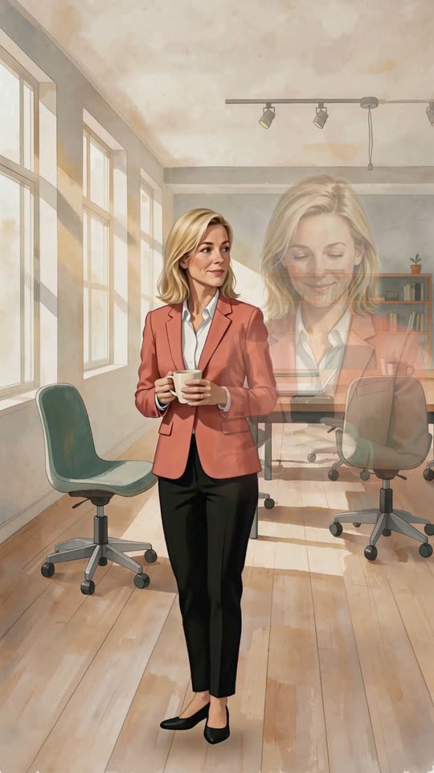
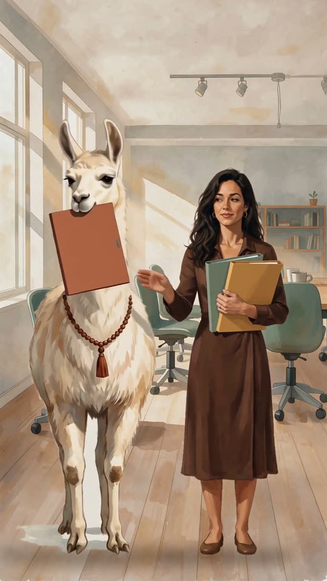
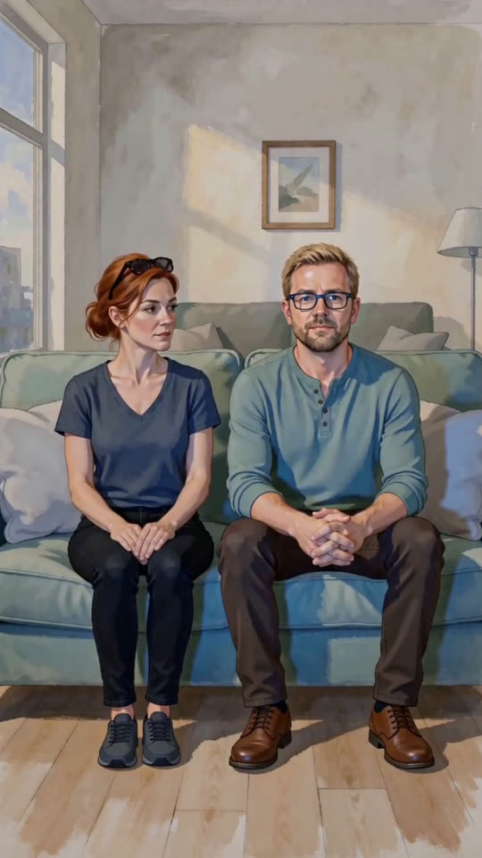
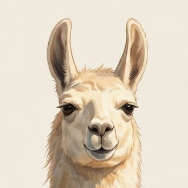

Everyone is already in a meeting.
What readers are saying
Recognizable, fast paced, and too hard to put down.
It made me stop, feel, think, and be honest with myself.
Laughing and crying, because it's so freaking real.
I was laughing so much because I realized I'm being such a Priya.
One of the few books I've actually read to the end lately.
I realized I still have the part 😂
Who's in the meeting
Five people at Arco, a wellness startup that has pivoted four times in eight months. Everyone is working. Everyone is performing. And every single one of them is in a different kind of meeting. Tap a card to see the one inside.
"No problem. I'll have it ready by 10."
"I need to stop being this available."
A part of her learned early that being useful is the same as being safe. It has never once taken a day off.
"This is our most important priority right now."
The words right now are doing a great deal of work.
A part of him converts every feeling into a plan before the feeling has time to land. Four pivots in eight months. Each one completely sincere.
"Three versions of every deck. Just in case."
Version A is what he said he wanted. Version B is what he actually wants. Version C is what she believes, and nobody asked for it.
Being right in private is better than not being right at all.
"Fine."
It means at least six different things.
An entire inner life, fully formed, continuously updated, rarely transmitted. When something matters, he makes tea instead of saying it.
"Just this week. Just until close."
She bills her life in six minute increments.
A part of her wanted support so badly, for so long, that it forgot how to accept any. She would decline the word burnout like a meeting request.
Then the company books a retreat. Three days at a farm, with trust exercises, a sound bath, a fire and two animals with strong opinions. What happens there is funny, and then it isn't, and then something better than both.
On the calendar today
Short animated episodes from the book, under a minute each. Tap one and turn the sound on. Their parts have things to say.



Which one are you?
We all have a few inner voices that run the show, in different amounts. Ten quick statements: tap how much each one sounds like you, and see who is in your meeting.
A friend sent you this. They got . Which one are you?
I say yes before I've really thought about whether I want to.
I rehearse conversations in my head that never actually happen.
I say “fine” when it isn't, quite.
When something feels uncomfortable, I'd rather start something new than sit with it.
I tell myself I'll rest once this busy stretch is over.
I prepare more than anyone asked me to, just in case.
I notice what everyone else needs before I notice what I need.
I check messages in moments I meant to switch off.
I get excited about new ideas and lose interest before they're finished.
When something really matters to me, I keep it to myself.
None of these sounded like you today. Either you are on holiday, or a part of you is very good at quizzes :) Try it again on a busy Tuesday, or open one of the doors below.
You answer before you finish reading. You make the coffee, the agenda, and the save. People say the place would fall apart without you, and a part of you needs that to stay true. Somewhere underneath there is a quieter question: who is holding you?
- Think of the last time you did something you didn't want to do without saying so. Something small. A yes that cost you something.
- Notice what happened inside before you responded. What was there first, before the action.
- Write one sentence about it. Just one. Nobody needs to see it.
Your enthusiasm is real. So is the speed. A part of you converts every uncomfortable feeling into a plan before the feeling has time to land, and the plans are good, which makes it very hard to catch. The feeling waits. It is patient that way.
- Think of something you have changed direction on more than once. A project, a plan, a way you approach something.
- What was the feeling just before you pivoted? Where did it live in your body?
- Ask: was it clarity, or was it relief? You don't have to answer out loud. Just notice the difference.
You are prepared for every version of the room. Version A, version B, and the one you actually believe, which stays in a folder. Being right in private feels safer than finding out. The backup plans are excellent. They are also very good walls.
- Try one thing without your usual backup. Send the email without three drafts. Make the suggestion without checking first what your boss will think.
- Notice what happens inside while you do it. The part that wanted the safety net will have feelings. Listen to them. You do not have to obey them.
You have an entire inner life running parallel to your outer one, fully formed, continuously updated, rarely transmitted. When something really matters, you make tea. The people who love you can tell the difference between your silences. That is not the same as hearing you.
- Ask yourself two questions: who in your life can you trust to catch you when you slip? And who can you catch?
- Write one name for each. Just one.
- If you cannot think of a name for either, that is also the practice. Sit with what it is telling you.
Just this week. Just this month. Just until close. You have been saying it long enough that it has become a way of life with excellent billing records. A part of you wanted support so badly, for so long, that it stopped being able to accept any.
- Ask yourself where you might be slipping right now. An old pattern returning, slowly. You probably already know.
- Think of one person you would trust to tell you when they see it.
- Ask them. Tell them what you are noticing, and that you would rather hear it from them than catch it three months too late.
- Your result, and what this part is protecting
- A small practice for the next time it takes over
- Short notes from me over two weeks, with stories from readers
- New episodes and practices, about once a month
Fifteen doors
The book leaves a small door open every few chapters, a practice with a blank page after it. Five are open here. The rest are in the book.
The Gap
- Think of the last time you did something you didn't want to do without saying so. Something small. A yes that cost you something.
- Notice what happened inside before you responded. What was there first, before the action.
- Write one sentence about it. Just one. Nobody needs to see it.
The Pivot
- Think of something you have changed direction on more than once. A project, a plan, a way you approach something.
- What was the feeling just before you pivoted? Where did it live in your body?
- Ask: was it clarity, or was it relief? You don't have to answer out loud. Just notice the difference.
Without the Backup
- Try one thing without your usual backup. Send the email without three drafts. Make the suggestion without checking first what your boss will think.
- Notice what happens inside while you do it. The part that wanted the safety net will have feelings. Listen to them. You do not have to obey them.
Who Catches You
- Ask yourself two questions: who in your life can you trust to catch you when you slip? And who can you catch?
- Write one name for each. Just one.
- If you cannot think of a name for either, that is also the practice. Sit with what it is telling you.
When You Slip
- Ask yourself where you might be slipping right now. An old pattern returning, slowly. You probably already know.
- Think of one person you would trust to tell you when they see it.
- Ask them. Tell them what you are noticing, and that you would rather hear it from them than catch it three months too late.
The story is fiction. The meetings are real.
Now I bring parts work, the method behind this story, to professionals and to teams.
IFS Level 3 trained · Certified Deep Transformational Coach · Clients in 15+ countries · More about Anna →
Take the meeting
A couple of evenings of reading. Something to take to work tomorrow that nobody else has to know about.
Get it on Amazon¿En español? La reunión ya empezó →
Read it already? A short review on Amazon helps the next reader find it.

"Beneath comment."
The Llama, early reader